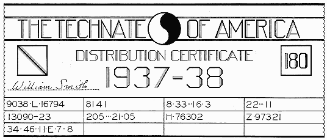

|
|
Search |
Adapted from an article by Harold Fezer in Technocracy, Series A, number 10, July, 1937. Distributed as a pamphlet starting late 1938.Typed in by Dean Cameron.
In this day of computers, credit cards, and microchips, an addendum should be included.
Rather than a book of paper "Energy Certificates", it is now possible that a plastic card similar to today's credit card with a microchip embedded would be more convenient. The chip could contain all the information required, as described in this booklet.
However, since the same information would be provided in whatever form best suits the latest technology, an understanding of the concept of the "Energy Certificate" as explained herein will help in providing that information.
Through countless centuries man has found his own security in the insecurity of others, has found his own economic and cultural haven at the expense of poverty and subservience in the majority, has found that a higher station in life was possible only for the few, not the multitude.
Throughout man's history a gigantic effort has been going on to erase from the face of the earth all evil between individuals, races, and nations. The approach has been an attempt at reforming and converting the individual with the hope that sufficient numbers of "good" men and women gathered in all lands might allow a lasting agreement upon the existing physical conflicts to be achieved. There is no need to picture here the futility of this approach and its very evident failure to accomplish the idealistic dreams.
It is perhaps one of the major ironies of history that a new and the only adequate approach should have been projected and offered by certain interpreters of applied physical science who distinctly disclaim as their motivating force all idealistic search for truth, love, peace, harmony, and other imponderables.
These interpreters, men of science, undertook an analysis of the operational problems of the North American Continental area. From this analysis they synthesized a technological design of social operation which they predicted as the next most probable form of social control in this area. It was objectively presented. By it, human history can become for the first time a planned progression, based on an a quantitative analysis of the continental totality, as contrasted with the old haphazard increment of the components peculiar to evolution; i.e. the planned arrival of the fittest, instead of the mere survival of the fittest.
It is precisely the intricate immenseness of the Continental Problems arising in the control and operation of a unique high-energy civilization that requires and results in a unique and entirely new social methodology.
The increase of energy-consuming devices in a high-energy civilization tends to nullify all concepts of `value' inherent in those previous ages. The rate of extraneous energy consumption on this Continental area has reached an order of magnitude which results in a plethora of goods and services beyond the manageable limits of our present control technique.
When power is used in vast quantities the resultant is an abundance of goods and services. Never in history has man faced the technical problem of distributing an achieved abundance. His efforts in the past have been directed toward philosophical speculation as to how an abundance might be achieved. Now, abundance has been thrust upon him by technology. One technical problem has been solved, but man, not realizing that he is faced with another technical problem, has turned to philosophic speculation to solve the distribution conundrum.
The availability and use of vast quantities of power opens up many vistas of possible human achievement hitherto seen only as shifting mirages by utopian dreamers of history. It realizes the physical fact of abundance. It contains within itself the technique whereby that abundance can be distributed. It provides, not just another variation of the method of haphazard exchange now in operation throughout the world, but a technique of mensuration, a physical accounting system on a Continental order of magnitude. This Continental accounting system in operation would be the arrival of certainty in all human physical requirements.
Science and technology have developed the method of research and analysis. Man is now an adept with honor-roll of achievement in the discovery and classification of physical knowledge by which he has constructed energy consuming devices that have created a new world. Today, the data are available. More research is being conducted than ever before. No area on earth excels the Continent of North America in this respect. In the matter of design too, science and technology have made strides, but only in the minutiae of science and technology.
Man has designed and construc ted enormous dams, power plants, canals, but he has never designed and constructed a continental hydrology. Man has designed streamlined trains, and magnificent railroad terminals, but never an integrated, continental system of low cost rail transportation. Man has designed automobiles and highways, but never a superhighway system with control of traffic origination and load factor. Man has designed mammoth strip steel mills, but not an automatic steel sequence from iron ore to finished product. Man has built haphazard Price System economies and political empires, but never has he designed a self-contained technologically controlled social mechanism.
In other words, the design of the past has been but the design of the minutiae, the working up from the part to the whole; and not the design of the whole. leading down into the microcosmic parts of the entity. When a continental social mechanism is designed as an operational totality, then and then only, will the results of the whole exceed the sum of its parts. When and only when, all the factors relevant to the operation of a social mechanism are measurable, is a planned social structure possible. With unmeasurable factors, effective social planning is impossible. Today, the predominant unmeasurable factor is `price' which explains why neither the United States or Russia, nor any other area on earth has been able to effect a planned economy.
But of course science and technology have never had the opportunity, until four decades ago, to design in this manner. Science and technology are comparatively new. They have been engaged in building with the tools of the knowledge at hand. They have never looked upon the social order, unless it be in a Jekyll and Hyde escape from their laboratory. Therefore, the discovery of the importance of the energy factor in social measurement was made by a scientist who never left his laboratory--a scientist whose laboratory was a Continent.
The dislocation of the commodity exchange method of distributing goods and services, and economics in general, became apparent after world war I. The disrupted conditions at that time led to an investigation which in turn uncovered the astounding, yet almost obvious, fact that the only common denominator of all commodities and services is energy.
The scientists who pointed this out, simply proposed to measure the total amount of energy used by the Continent in a given period; measure the energy cost of physical production and use these measurements as a basis for the regulation of all Continental production and distribution.
The Price System grew out of the days of scarcity, when trading his crude materials, or stealing them, was the only way in which man could acquire the articles which he required.. Through complex ramifications the trading system has grown until it is now the overwhelming structure of finance, business, commerce, and politics, in short, the Price System in toto--a gigantic structure, but still just a method of exchanging goods, springing from the ancient custom and necessity of barter. No intention or pretense is made of accurate mensuration or control; no physical accounting is involved; no accurate predictions can be made; and no stabilization can be assured. The Price System is simply a method of erratic exchange. In scarcity it sufficed well enough as an exchange method; in abundance it cannot even do that.
When the possibility of assuring accurate measurement of all goods and services in quantitative physical terms was announced, it was treated with scorn by all of the institutions of the Price System. To take science out of the laboratory, and apply it to social operations was considered heretical. But now the inevitability of such development is fast becoming accepted. Those who are blind to the the acceptance of this new thing will be like those who refused to accept the coming of the railroad. They will have to accept it or remove themselves from its sphere. Let us add, that it is a long, cold swim to the next continent.
Physical development has made the next step mandatory; and Technocracy, grown from the work of interpreters of science previously mentioned, now states the following unqualified facts: that we live on the North American Continent; that this Continent has abundant resources; that its population is the most nearly homogeneous of any like area on the earth; that we have designed, built and are operating the largest and most complex array of technological equipment in existence; that we have more men and women technically trained than any other area on earth; that we have the highest average consumption of extraneous energy per capita of any continent.
Technocracy also states: that there need be no restriction of our physical standard of living due to inadequate resources; that we can only continue toward maximum physical consumption by the increased substitution of kilowatt-hours for man hours, and by a continuous improvement of our equipment; that we will be forced to greater and greater integration of our physical equipment; that we will be forced to adopt a technological administration of all sequences of social operations.
This then is our social progression whether we like it or not. If we do not accept these physical conditions, and refuse to adopt a method of control capable of administering these processes, there is only the other alternative--complete abandonment of our technological developments, with the consequent chaos. It is not likely that we will permit that catastrophe. The American people are going to demand that we move forward; and they, the American people, are going to conscript their leaders, the technologist, scientists, and engineers, to lead them to a New America.
The following sections are not yet available for this online version:
The Technate will put into operation a Continental control of all flow lines of production and distribution--a Continental statistics expressing the desires of every citizen in his choice of consumable goods and available serices. This system will do the following things in a physical entity where abundance is certain;
The operation problem of producing Continental abundance is without precedence in the social history of man. The magnitude of this operational problem prescribes that there can be only a unique solution. The physical wealth of Continental abundance can be produced only by the technological application of extraneous energy to all means of production and distribution, namely, to the means whereby human beings live. This Continental production of abundance therefore will necessitate the largest per capita consumption of extraneous energu possible of achievement, consonant with maximum conservation of natural resources.
The degradation of this volume of extraneous energy on the Continent in the process of producting abundance would require the maximum efficiency at the closest approach to full load operation. It is obvious that the production of the physical wealth of Continental abundance will be attained only with human toil at a minimum, and it therefore follows that the unique solution of this operational problem must be the accurate measurement of all extraneous energy converted on the Continental area, and the continuous recording of its allocated degradation in providing the citizens of this continent with the physical wealth of abundance for individual consumption. Science and technology have no values; only measurement. The only method known to science in the measurement of the cost of all physical opeartions is that mount of energy consumed per unit mass, per unit time, per unit distance. Technocracy presents the only metrical control of the conversion and consumption of extraneous energy on this Continental area.
The total amount of certificates which will be issued will represent the total amount of net energy converted in the making of goods and the provision of services. All operating, replacement, maintenance, and expansion costs (in energy) of the Continental complex, all costs of commercial services and provisions (such as local transportation, public health, and minimum housing space for for each individual) are deducted before the net energy is arrived at.
The conversion of human energy does not enter into this calculation since it amounts to below 2 percent of the total consumed energy. The individual's share is not based upon his contribution of work of effort to the total operations of the area. There is no theory of labor `value'--or of any other `value'.
Every adult above 25 years of age will receive as his share of purchasing power an equal part of the total net consumed energy, and from birth to the twenty-fifth year every individual will receive a maintenance allowance.
The certificate will be issued directly to the the individual. It is non-transferable and non-negotiable, and therefore it cannot be stolen, lost, loaned, borrowed, or given away. It is non-cumulative, therefore cannot be saved; and does not bear interest. It need not be spent but loses its validity after a designated time period.
The female will receive the same amount of purchasing power as the male, and receive it entirely indipendent of him.
The energy certificate represents equal, though not identical, purchasing power for every adult living on this Continent. In itself it represents nothing of value. It is much in the nature of a blank check--a scrap of paper.
The certificate is valid only for the purchase of items individually consumable. Means of production and distribution are not obtainable by the individual. The individual owns nothing beyond his immediate personal implements and apparel. For example, he does not own an automobile but merely pays for the use of transportation facilities on a time-distance basis.
Technocrcay's mechanics of social control will permit no curtailment or differentiated increases of individual purchasing power.
The available use forms and services will most probably be beyond the consuming power of the individual.
The certificate furnishes the individual with the means of maximum social expression and decision, since purchasing power is the only means whereby the individual as such can participate in directing the variations possible within the limits prescribed by the energy determinants of the area wherein he lives. The rate of flow of goods and services in abundant quantities can be controlled by no other mechanism than an exact means of distribution such as the energy certificate provides. Incidentally, the energy certificate is not applicable to any society operating under scarcity conditions, or any area dependent beyond a certain maximium upon other areas for its supply of energy and resources.
The energy certificate eliminates both the basis and need of all social work, charity, and philanthropy. It will reduce crime to but a small fraction of what exists today. That fraction will fall into the field of pathology. The reduction will not be due to any change in human nature, but to the absence of objects of `value' and the lack of gain to be had. The element of a chance to win or the risk to lose, disappears.
This means of distribution, based on a determinable change of physical cost per unit produced and of service provided, is not subject to fluctuations of `value.'

The energy certificate* will be made of water-marked paper and be issued in strips folded into rectangular booklets small enough to be carried conveniently in the pocket. [no illustration yet]
It will have one of three colors, to identify the person to whom it is being issued (hereafter called the holder) as being in the age-group below 25, between 25 and 45, or above 45.
On the one side will be printed a diagonal line whose direction will indicate the sex of the holder. Upper right to lower left will indicate it has been issued to a female; upper left to lower right (as in the figure), to a male.
On the opposite side will be printed a number indicating the date of issue, a new series being issued approximately every 30 days (see `180'). If the certificates are used up before the amount spendable is exhausted, additional blanks will be easily procurable.
In the middle of the certificate will be water-marked in large figures the dates of the period during which it will be valid (see `1967-68'). This whole-time period will always include a full balanced load period, which at the present time would be about 14 to 15 months.
At the bottom will be three lines containing various figures and letters--code. Reading from left to right along the top line, the first box will contain the holder's Registration Number, given at birth (the `9038. L. 16794')' part of which will be the Number of the Regional Division in which the holder was born (the 9038).
The second box will contain the Number of the Regional Division in which the certificates has been issued, and in which the holder will have lived and functioned during the period for which it was issued (the `8141').
The third box will contain a series of digits which, coded according to a modified Dewey Decimal System, will show at a glance the exact place of the holder in the Technate's functional structure. Reading from left to right, the first digit (or number) will designate the Functional Sequence in which the holder of the certificate works. This will be followed by a raised decimal point. The next digit will designate the particular Division of the Functional Sequence in which he works (whether for example, in design, Construction, Operations, or Maintenance). The next separated by several points, will be set off by another point and designate the particular Department of the Section in which he works. The last digit (or number) will be set off another point and designate the Unit in which the holder is employed. Still further subdivisions can be made if necessary.
In the figure the series of digits in the third box reads, `8.33...16.3.' This would indicate that the holder is employed in the Iron and Steel Sequence (the `8'), in the Steel Division (the first `3"), in the Operations Section (the next `3'), in the 16 Department of that Section, the Blast Furnace Department (the `16'), and the Blowing Engine Unit of that Blast Furnace Department (the last `3').
The last box of the top line will contain two numbers. The first will indicate the total number of men employed in the Unit designated by the last digit in the preceding box; and the second will be the number of this particular holder in that group. In the figure these numbers read `22. . .11.' This would mean that the holder is number 11 of a total of 22 blowing engine operators in the Blast Furnace Department of this Section, Division, and sequence.
The code so far described, together with the contents of the last box of the second line (the serial number of the certificate, `Z. 97321'), is imprinted on the certificate prior to its issuance to the holder; therefore it is already on the certificate when it is presented for purchase. The remaining figures of the second line, and those of the third line, are carbon coded on the certificate at the time of purchase.
The first number in the first box of the second line will indicate the total units of purchasing power remaining--before the purchase--at the disposal of the holder within the time period for which the certificate was issued. The second number will represent the physical cost of the purchase(s) just made. The total remaining units of purchasing power, obtained by subtracting the second number from the first, will be automatically coded upon the succeeding certificate, ready for the next purchase. In the figure, before the purchase was made, the holder had at his disposal 13090 units, and his purchase amounted to 23 units. The sum remaining to be coded on the succeeding certificate, therefore is 13067.
The second box will contain the day of the year and the time of day at which the purchase is made. In the figure, `205 . . . 21.05' would show the purchase as having been made on the 205th day of year at five minutes after the 21st hour (the time, of course, being figured on a 24 hour basis) .
In the third box will be the serial designation of the recording machine registering the purchase (here `H') and the number of purchase (here `76302').
The fourth box as mentioned above, will contain the serial number of the certificate (here `Z.97321').
In the lowest of the three lines will be boxes providing for four purchases---if they consist of the same merchandise (say shoes or shirts only). The first box of a used certificate will contain series of digits and letters, again coded according to the modified Dewey Decimal System, which will specify exactly what the purchase was. In the figure the `34.46 . . . 11.e7.8' would indicate that the article made by the Leather Sequence---leather after it has left the animal---(the`34'), that the article was a pair of low shoes (the `4') , that they were men's shoes (the`6"), size 11 (the `11"), width E (the `E'), of the last number 7 (the `7"), and of the style number 8 (the `8").
At the same time the holder surrenders the certificate for some service or goods he will place his signature in the space provided,
The carbon codings called for allow the use of electronic devices. By means of these devices it will be possible to register automatically and virtually instantaneously the date, time, amount and type of purchase. as well as the complete record of the individual making the purchase. Total tabulations for the Continent or any part of the Continent will be quickly available at all times. It will be seen how indispensable this system--carbon coding and energy certificate---will be for the maintenance of adequate production schedules and sufficient stocks. By it, many kinds of checks can be quickly made. If necessary an individual's movements may be traced by his purchases across the Continent,
We find the energy certificate to be, then a methodology of technological accounting---a methodology which applies the same rigid mensuration that our mass-production of today employs, and has the employ, in its swiftly moving flow lines of intricate equipment and multifarious products.
Inflation, deflation, fiat money, social dividends etc. are---and have to be---dismissed as instruments suitable for the distribution of an abundance of goods and services. They all presuppose a condition of scarcity with its corollaries of value: demand and supply, haphazard and meager flow of goods and services, and a political interference control superimposed upon the functions of a national economy.
Today, wealth is measured according to the possession of the medium of exchange. A person's possession may have originated through channels either ethical or unethical, legal or illegal, socially detrimental or beneficial; but once in possession of the medium of exchange the holder may apply it with little thought to social responsibilities, the only limiting factors being his shrewdness and the volume of tokens at his command. And under modern corporate enterprise the volume at his command will far surpass that in his actual possession. The Technate will not prohibit by legalities these uses or abuses: the energy certificate mechanism automatically excludes all possibilities of their occurrence.
The energy certificate is a methodology of mensuration and in use becomes a dependent, invariable, and integral part of the total operations. By contrast, all media of exchange represent `values,' fictitious or only ostensibly based upon physical objects, distinctly apart from or merely a unit of the totality of operations. The medium of exchange must always be restricted to processes of evaluation, and can never be a process of mensuration,
The energy certificate will not partake of that miraculous feature of a medium of exchange, expansion at a compound rate of interest. And it has nothing to do with that other convenient property of a medium of exchange which allows manipulation in such a manner as to result in a handsome multiplication of the leaven with which the first transaction is effected. We must mention, here, that the original nest egg may have been a borrowed one. Few laymen have bothered themselves to trace deposits and bank loans logically through a series of transactions. A Truly munificent golden cow has been milked for its cream by the financial world.
The disappearance of `values' in tangible objects with the advancing technology approaching full automaticity is a fundamental factor not anticipated by Marxian theory of `values,' nor by any other social philosophy. The disappearance of `value' automatically invalidates all social philosophies as potential solutions of our social problems. Social philosophies are based on assumed moral values of human effort.
Previously, that item which was scarcest and involved the largest expenditure of human effort was the highest in `value.' Now, in a sea of abundance, one who stubbornly holds fast to a social philosophy and values is much like the poor hen who with bewilderment watches the ducklings she has hatched take to the water. She herself lacks the webbed feet required for swimming, and cannot understand such peculiar goings-on.
As a case in point, let us consider one material without which no life can continue on this globe--air. Air has never yet been subjected to the operations of trading, financing, mortgaging, loaning, borrowing, evaluating, or any other manipulations of the Price System. Why? Because its bountiful supply has never permitted the creation of a demand. With it there never has existed the opportunity of introducing the concepts of `value' and human labor which form the basis of Marxian theory.
The characteristics of air can be duplicated with any other needful thing, if we establish the requirement of abundance.
There might be much said in disposing of Major Douglas' Social Credit theory, Fischer's commodity dollar, Soddy's treatment of monetary structure, and other such schemes. In theory they differ, but in application they all deal in evaluation and therefore must be declared inapplicable in an era of abundance where there are no values. It did not happen that Soddy, an outstanding scientist, came remarkably close to the projection of the unique civilization required in an era of abundance--but ere too late he remembered that he was an English gentleman, inescapably charged with the preservation of all that for which Oxonian tradition stands.
The energy certificate furnishes the molecular mass with a medium whereby it presents its mandate unequivocally and continually to the administrative mechanism, without representation, delegation, referendum, or any other device of previous social administration.
The Energy certificate is the only instrument of distribution which can be used in this Continent's emerging era of abundance.
There can be no era of abundance without a New America.
The energy certificate will be the instrument of distribution in the New America.
``The injection of monetary concepts into all discussions of national wealth and income wholly confuses the people as to the actual issues at stake, and furthermore serve as a handy screen behind which, with a little word juggling, the business-political operators of the Price System can continue their profitable activities without being too greatly embarrassed by outside interference. It is high time that the significance of national wealth and income be understood by every citizen on the North American Continent.''
--HOWARD SCOTT